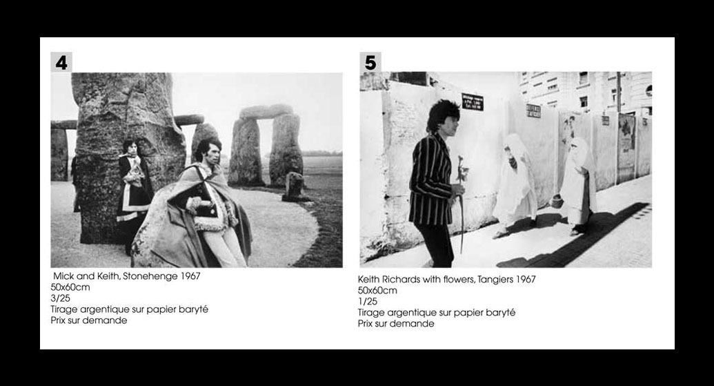
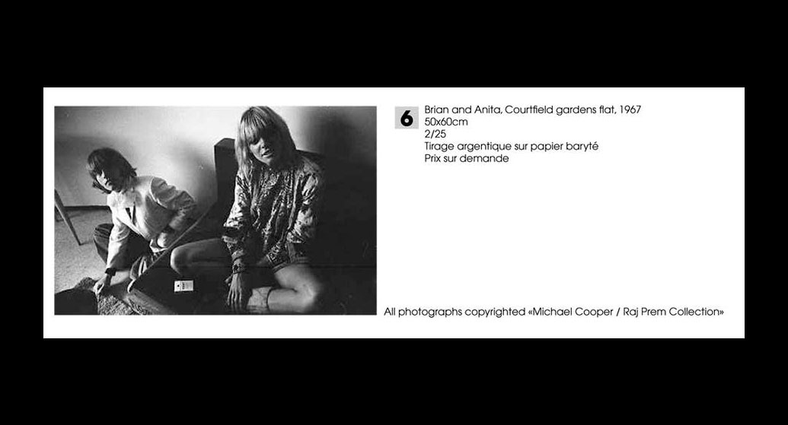
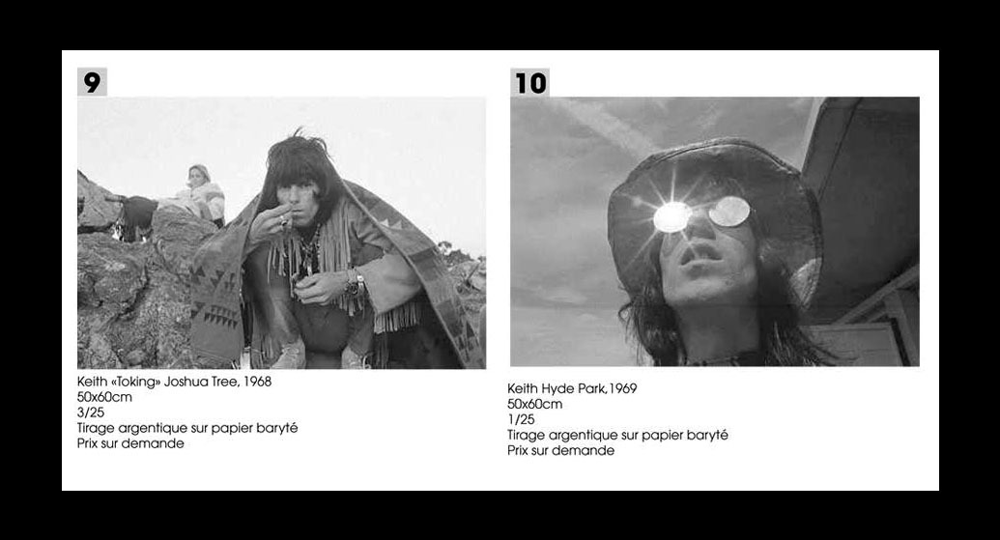
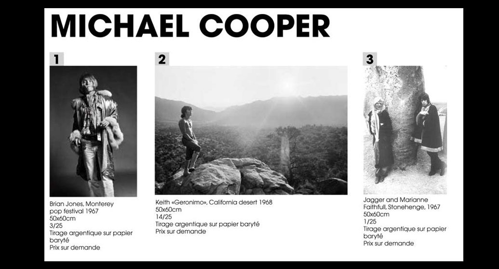
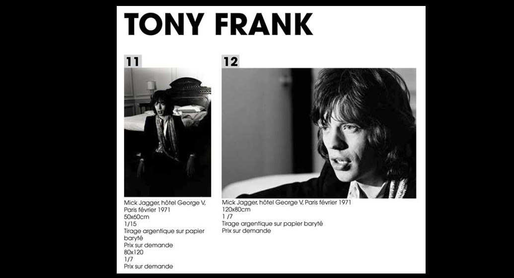
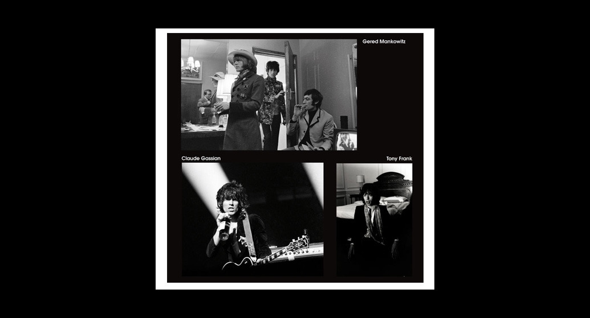
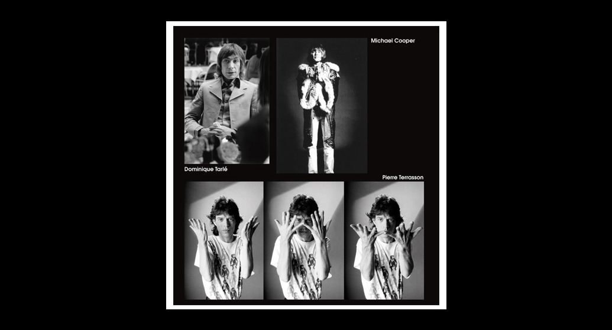
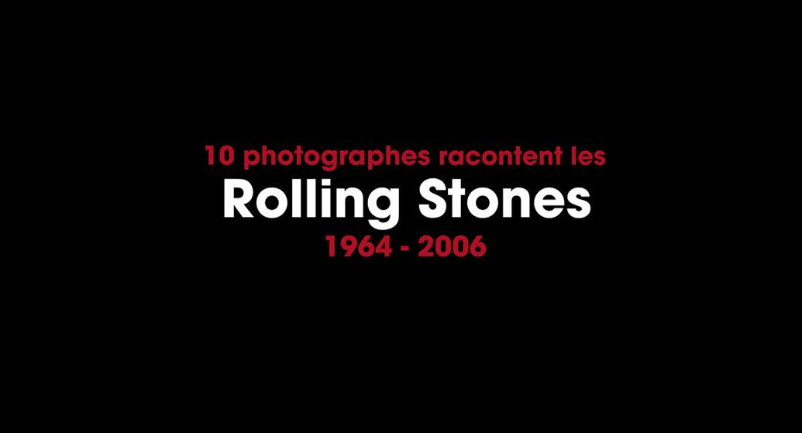

Thu, 19 Aug 2010 12:18:00 · TheRollingStones · Paris · photography · RockandRoll · Music · PalaisdeTokyo
celebrating 40 years of the rolling stones








Celebrating 40 Years of The Rolling Stones
—
Maurice Renoma, a renowned French photographer, celebrity stylist, and the eponymous owner of the Renoma Café Gallery and Boutique, staged yet another eclectic exhibition as part of “The Story of” theme; this time devoted entirely to The Rolling Stones.
Bringing together the work of ten photographers [including Renoma himself], the exhibition takes a look at the 40 years of The Rolling Stones and their role in the history of, get this, contemporary fashion.
–
I remember going to The Rolling Stones exhibition many many moons ago, back in 2005 if I’m not mistaken, and it was staged at Palais de Tokyo, Paris. The exhibition, which I forgot the title, featured The Rolling Stones in their world tour that span more than three decades. Among the collections was postcards sent by the band members to their friends and family back home. On one of those postcard, was the line that I deeply embraced and put it as my email signature. “Les hypies ne vivent pas en marge de la société car la société n'a pas de marge…..”
~ All photographs are copyrights of the respective photographers and courtesy of Renoma Le Blog: http://is.gd/eowk8